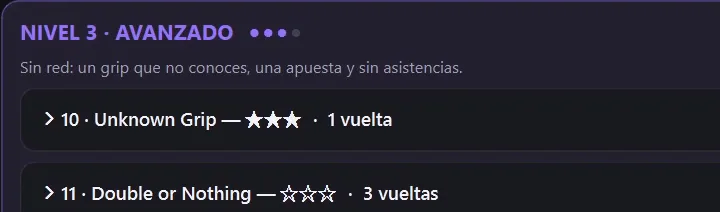
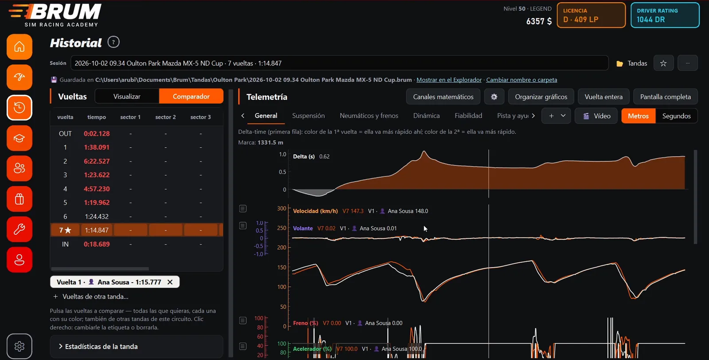
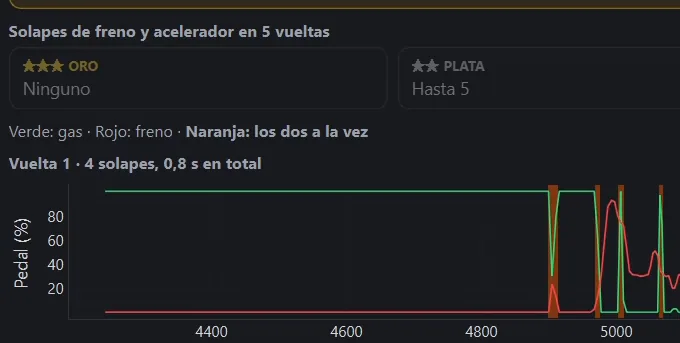
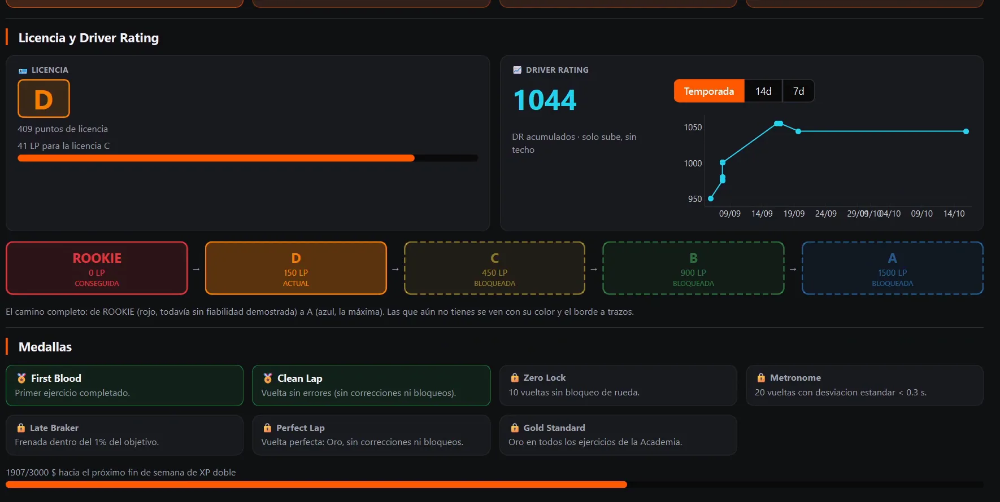
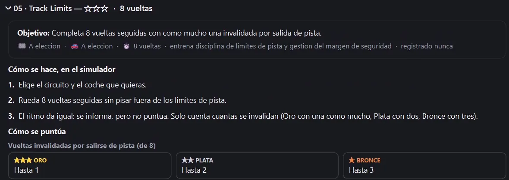
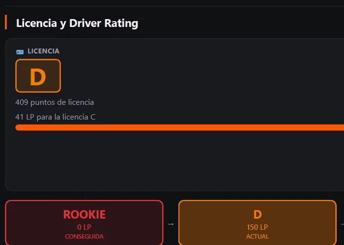
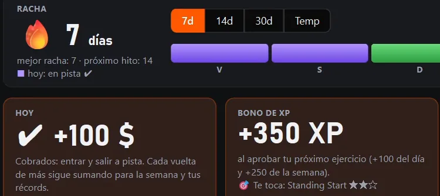
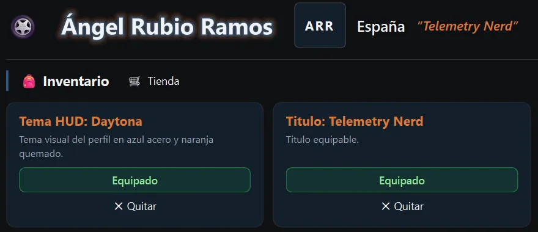
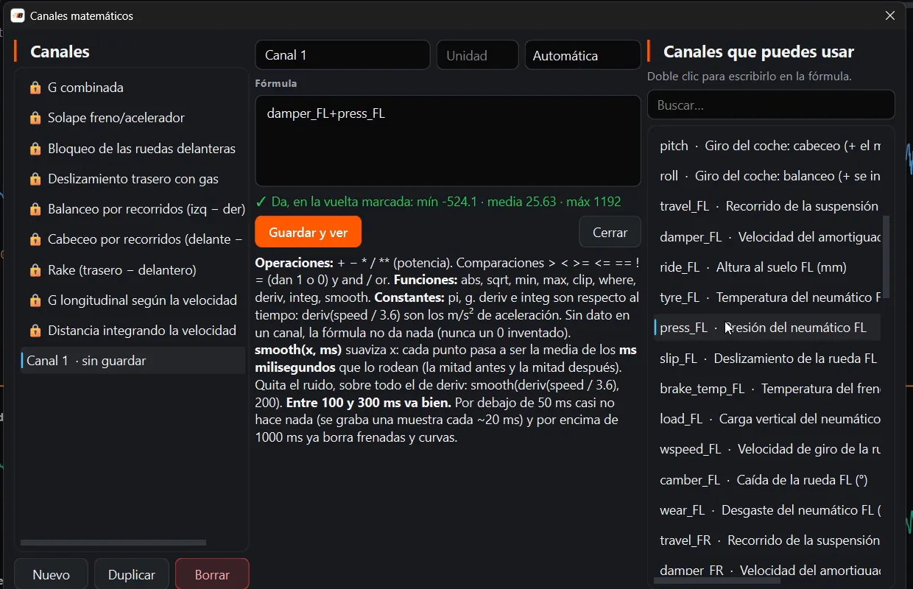
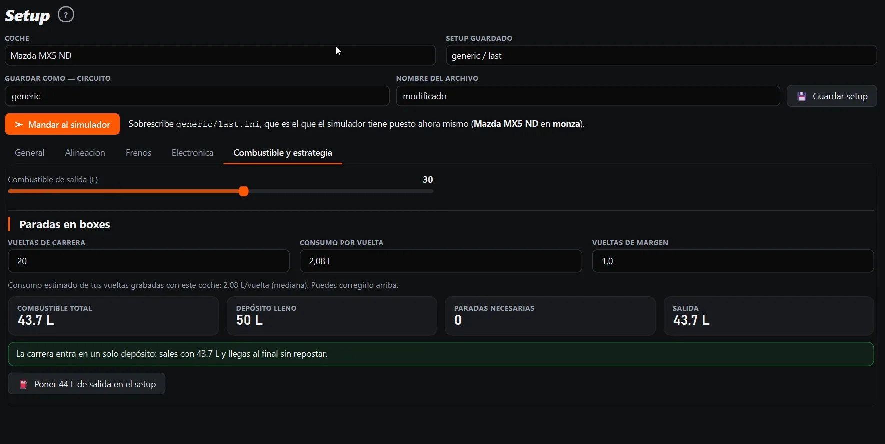

Ejercicios por niveles
Cuatro niveles, de lo básico a la maestría: Standing Start, Brake Marker, The Window, Unknown Grip, The Metronome…
Graba la telemetría de tu simulador, compara cada vuelta metro a metro y entrena con ejercicios que se corrigen solos.
Gratis y en tu PC · versión 0.6.1 · 260 MB
Para Assetto Corsa, AC EVO, Automobilista 2, rFactor 2, Le Mans Ultimate e iRacing.
Arrastra por la vuelta. Es lo que hace el Comparador de Brum: tu vuelta nueva contra la anterior, metro a metro. El delta dice dónde se va el tiempo.
−0.000s en 100 m
0 m · Sector 1 · delta acumulado ±0.000 s
Oulton Park · Mazda MX-5 ND Cup · Assetto Corsa EVO · 1:14.847 contra 1:15.777. Telemetría real grabada con Brum.
Eliges simulador, le das a grabar y conduces. Cada vuelta se guarda sola, con sus sectores, sea válida o no.
Marca dos vueltas, o las que quieras: velocidad, pedales, volante, marchas y delta en el mismo gráfico, alineados por distancia.
Cada ejercicio te dice qué hacer en pista y qué pide el Oro. Brum lo corrige leyendo tu telemetría.
De Rookie a A. Los ejercicios suman puntos de licencia, el Driver Rating sube y las medallas se ganan en pista.



32 vueltas válidas en Brands Hatch con el Mini, en seis tandas y dos días: de 1:07.209 a 1:00.804. 21 fueron más rápidas que la anterior y 10 más lentas. Brum te enseña las dos, porque en las rojas está la siguiente mejora.
1:00.804
Vuelta 26 de 32 · tanda 4 · nueva mejor
Más rápida que la anteriorMás lenta que la anteriorTu mejor vuelta hasta ese momento
Vueltas válidas reales del autor de Brum: Assetto Corsa EVO, Brands Hatch, Mini John Cooper S, 9 y 10 de octubre de 2026. Foto de fondo: Circuit Zandvoort, de dronepicr (CC BY 2.0).

Cuatro niveles, de lo básico a la maestría: Standing Start, Brake Marker, The Window, Unknown Grip, The Metronome…
En Zero Overlap cuenta los solapes de freno y acelerador vuelta a vuelta y te los dibuja.
Si no llegas, sabes exactamente cuánto te falta y dónde.

Cada ficha dice qué hacer en el simulador y qué pide cada medalla antes de que salgas. Luego eliges: conducirlo ahora, y Brum graba y cuenta las vueltas desde que estás en posición, o usar vueltas que ya tienes.

De Rookie a A, cada licencia pide sus puntos. El Driver Rating solo sube.
Las medallas, como First Blood, Clean Lap o Metronome, se ganan en pista.

Salir a pista cada día alimenta la racha y te da dinero de la app.
Se gasta en la Tienda: boosts, modificadores, títulos y temas.

Temas HUD para toda la app: Daytona, Bathurst, Imola, Le Mans, Suzuka…
El mismo Brum, con tus colores.
Suspensión, neumáticos y frenos, dinámica, fiabilidad, pista y ayudas: lo que manda el simulador, ordenado en pestañas.
Escribe una fórmula y Brum la dibuja: G combinada, solape de freno y acelerador, rake, balance por recorridos…
Lee y edita tus setups con los rangos reales de cada coche, combustible y estrategia incluidos, y guárdalos para el juego.
Pasa una tanda a MoTeC i2 o mándasela a otro piloto en un archivo .brum. La que te manden se abre con doble clic.




Eliges el tuyo y Brum graba solo.
Cada frenada, cada piano y cada metro quedan grabados. Lo que hagas con ellos ya es cosa tuya.
Nada. Brum es gratis. Si te ayuda a ir más rápido, puedes invitarme a un café en Ko-fi.
Un PC con Windows 10 u 11 de 64 bits y uno de los seis simuladores. El instalador pesa unos 260 MB.
Es normal: el instalador todavía no está firmado. Pulsa «Más información» y luego «Ejecutar de todas formas».
No. Las tandas y la telemetría se guardan en tu PC. Para grabar y analizar no hace falta cuenta ni conexión.
Brum lee lo que manda el simulador, así que graba igual con volante que con mando.
Sí: el plugin rF2SharedMemoryMapPlugin64.dll activado dentro del juego. Lo más fácil es instalarlo con SimHub o con Crew Chief.
Descarga la versión nueva desde esta página e instálala encima. Tus tandas se quedan donde estaban.
Desde la app, con «Mándame feedback» en Inicio, o a angelrubioramos@gmail.com.
Descárgala, instálala y dale a grabar en tu próxima tanda. Lo que pase después lo verás en verde y en rojo.
 Comunidad
Comunidad